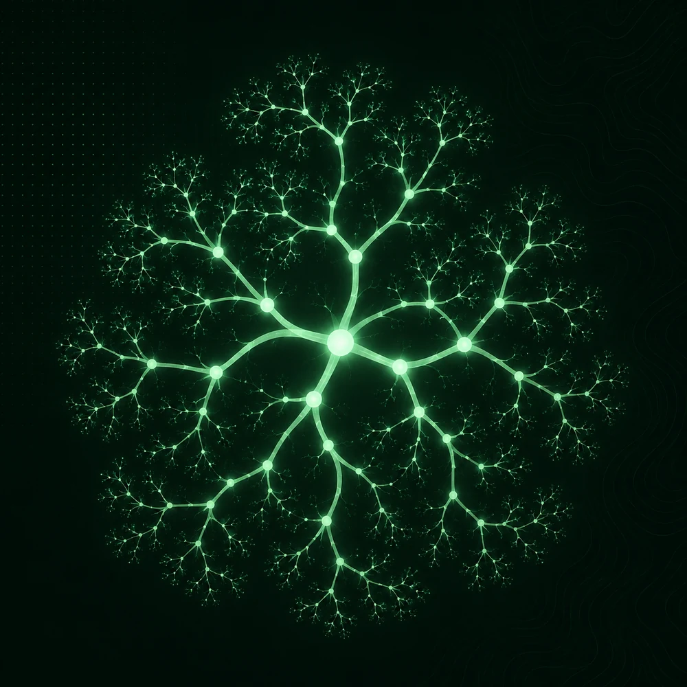
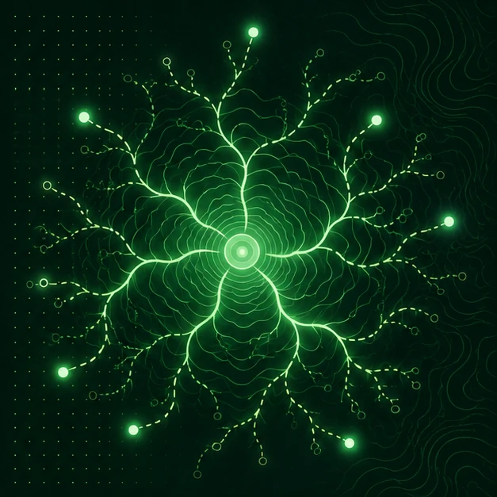
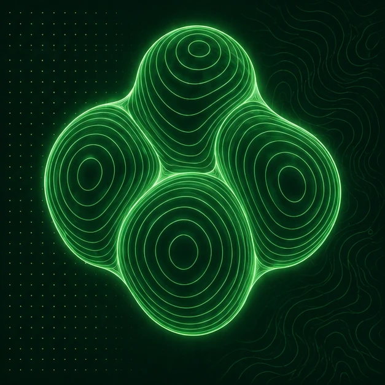
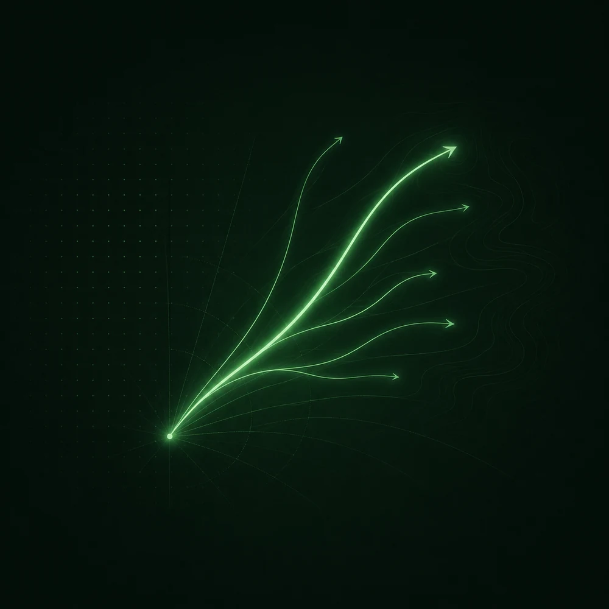

NeuraVision Research lab
The Neuravision lab led by Doruk Oner specializes in computer vision and deep learning. Our main goal is to teach deep models about topology. We investigate diverse areas including topology-aware vision, uncertainty estimation, 3D shape understanding, and trajectory forecasting.

Research
What we work on
Several threads, one question: how can deep networks respect the structure, geometry and uncertainty of the visual world?

01 · TopologyTopology-Aware Computer Vision
We develop computer vision methods that explicitly account for topological properties such as connectivity, continuity, and the preservation of meaningful structures.
Explore →
02 · TrustUncertainty Estimation & Trustworthy AI
We develop methods for estimating predictive uncertainty and improving the reliability and trustworthiness of deep learning models.
Explore →
03 · 3D3D Shape & Implicit Representations
We study neural representations for modeling, understanding, and manipulating complex 3D shapes.
Explore →
04 · Motion ForecastingTrajectory & Motion Forecasting
We develop methods for predicting the future trajectories and motion of agents in dynamic environments.
Explore →Selected Work
Latest publications
-
MICCAI · 2025
CAPE: Connectivity-Aware Path Enforcement Loss for Curvilinear Structure Delineation
-
TMLR · 2025
PartSDF: Part-based implicit neural representation for composite 3D shape parametrization and optimization

-
MVA · 2025
Vision-based power line cables and pylons detection for low flying aircraft
Latest
Lab news
- Sep 2025 CAPE accepted at MICCAI 2025New Lab members Elyar Esmaeilzadeh, Ehsan Garaaghaji and Farzad Hallaji Azad, with Dr. Doruk Öner, present CAPE — a Connectivity-Aware Path Enforcement loss for curvilinear structure delineation.
- Feb 2025 Detecting bronchiolitis obliterans from chest CT Our collaborative work harnessing deep learning to detect bronchiolitis obliterans syndrome from chest CT appears in Communications Medicine.
- Jan 2025 PartSDF published in TMLR PartSDF, a part-based implicit neural representation for composite 3D shape parametrization and optimization, is published in Transactions on Machine Learning Research.
Join the lab.
We are looking for curious students who like hard, beautiful problems in vision and learning.